Chapter 9 · Part 2 — Mouse-walk
Annie started up the rope ladder.
Jack followed. He felt sad, too. He liked that little mouse now. He liked it a lot.
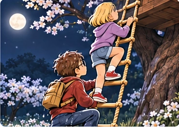
They climbed up and up.
Just before they got to the top, Jack heard it.
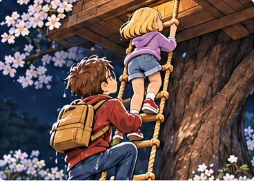
Squeak.
“Oh wow!” cried Annie. “Peanut’s inside!”
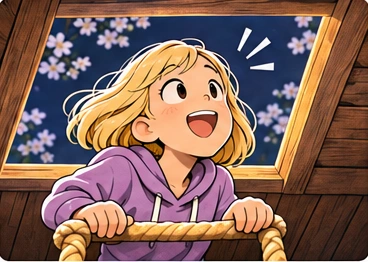
Annie pulled herself into the tree house. Jack followed.
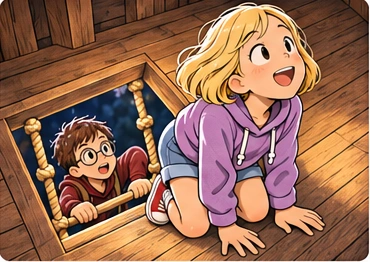
He gasped.
Someone else was in the tree house, too.
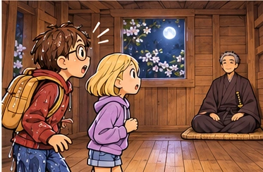
A dark figure was sitting in the corner.
“You have done well,” the figure said.
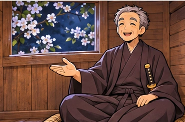
It was the ninja master.
“You have followed the way of the ninja,” he said.
“Oh man,” breathed Jack.
Squeak.
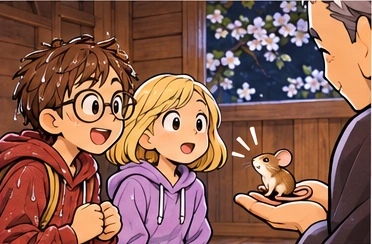
The master was holding Peanut.
“Take good care of your little helper,” he said, handing the mouse to Annie.
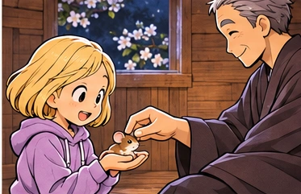
Annie kissed the mouse’s tiny head.
“And take this—” said the master. He held his hand out to Jack.
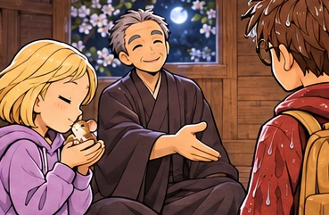
He gave Jack a small, round stone.
“This moonstone will help you find your missing friend,” the master said.
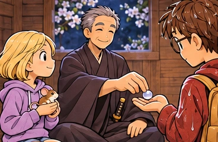
Jack stared at the stone. Was this one of the four things?
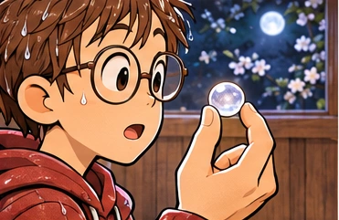
“You must go home now,” said the master. He picked up the Pennsylvania book and handed it to Annie.
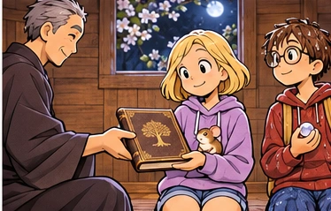
“Where did you find it?” asked Jack.
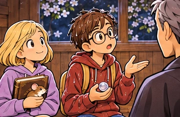
“Here,” said the master. “You did not see it before. Because your heart knew you had a mission to complete first.”
“What about you?” said Annie. “Can you come with us?”
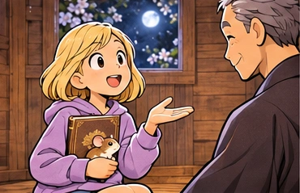
“Yes,” said Jack. “We need help finding Morgan.”
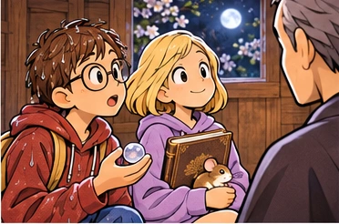
The master smiled. “No, my friends. I must stay here. There will be more help along the way. But you must find the way on your own.”
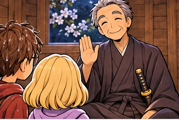
Annie opened the book. She found the picture of Frog Creek.
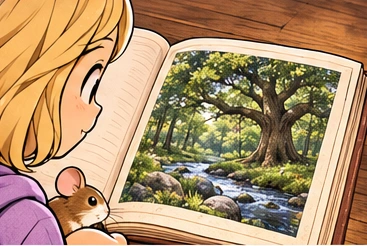
She pointed to it. “I wish we could go there,” she said.
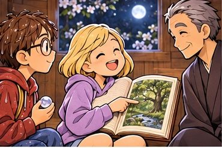
The wind started to blow.
The white flowers started to shake. Clouds covered the moon.
“Remember,” the master said, “keep a kind heart.”
Then he swung silently down the rope ladder. He disappeared into the dark night.
“Wait!” Jack called. There was so much he wanted to ask the master. About nature. About ninjas. About their mission.
But the tree house started to spin.
It spun faster and faster!
Jack gripped the stone in his hand. He squeezed his eyes shut.
Then everything was still.
Absolutely still.